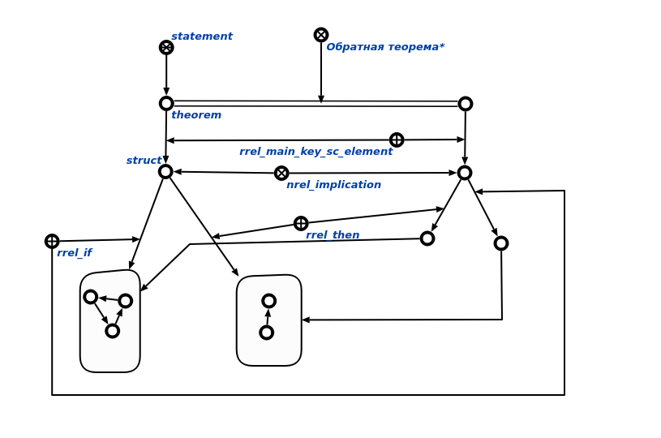

Команда пользовательского интерфейса для генерации противоположной теоремы в заданном контексте предназначена для генерации противоположной теоремы. Первым аргументом команды является теорема, для которой необходимо сгенерировать противоположную теорему. Вторым аргументом является контекст в рамках которого необходимо построить противоположную теорему.Результатом выполнения команды является вывод на экран исходной теоремы и противоположную ей в рамках контекста.
